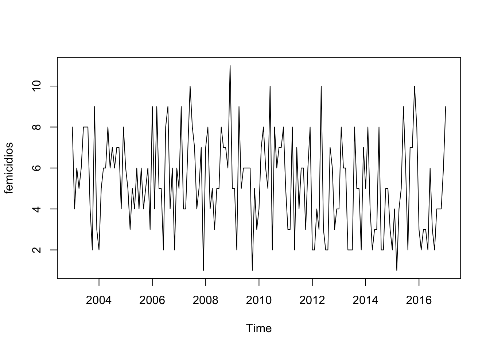
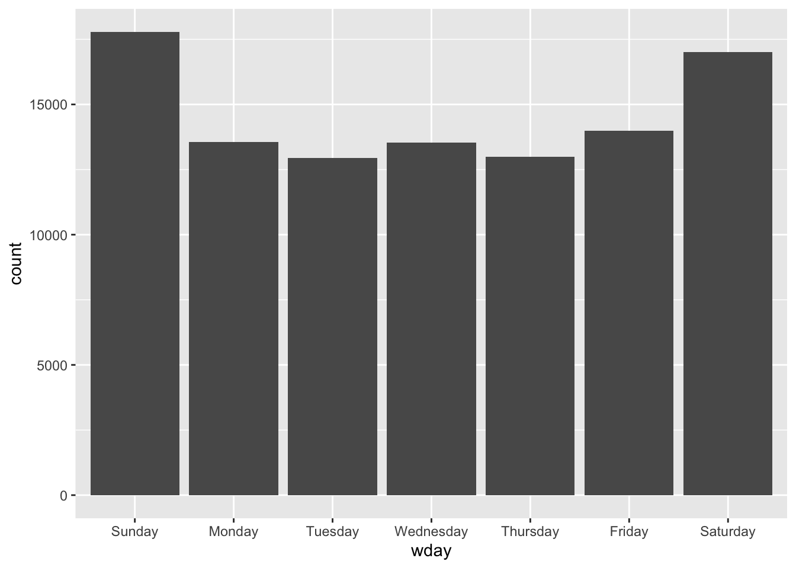
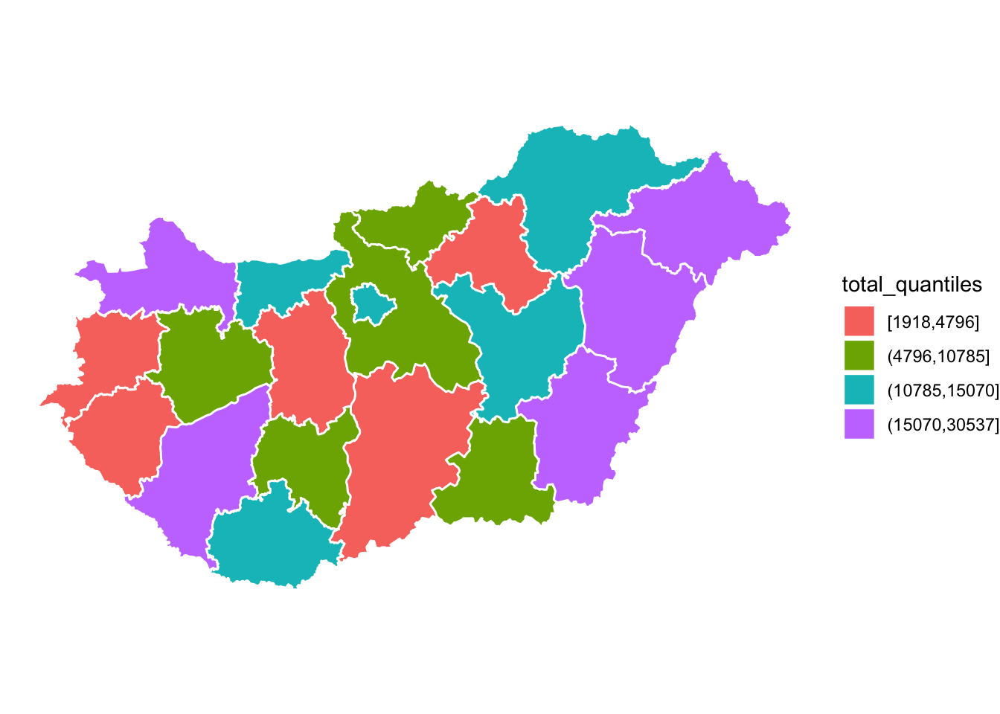
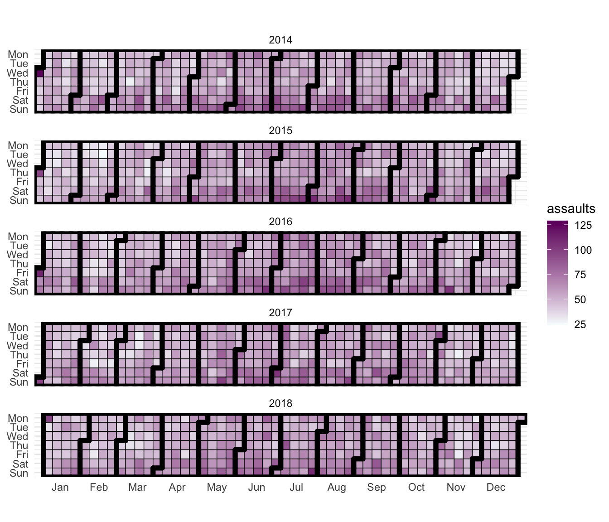
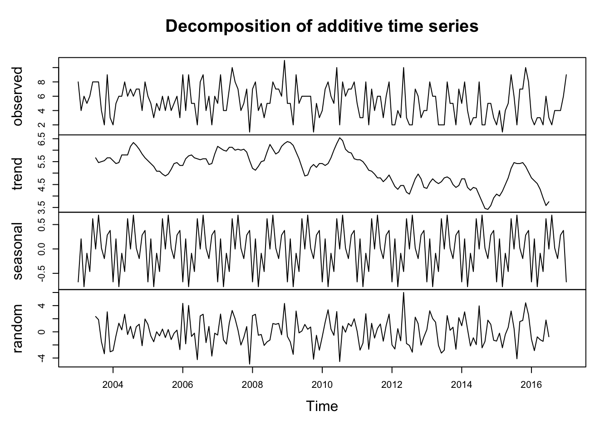

Chapter 6 Chapter 8: Time matters: a brief introduction into spatio-temporal visualisation
The importance of place in criminology and crime analysis is widely recognise. We know certain areas can be crime hotspots. However time is just as important as place. We often hear that crime is “going up” or “going down” over time. These variations on the levels of crime along time also vary by space. These spatio temporal variations are of crucial importance for crime analysis, explanation, and prevention; yet traditionally the temporal and spatial analysis of crime has not been done in a combined manner. Although a great deal of energy has been devoted to produce accessible training material for crime analysts on geographic information systems and spatial analysis, most criminology degrees (even at postgraduate level) and training packages for crime analysis devote a very limited space (if any) to the appropriate visualisation and analysis of temporal and spatiotemporal data. Therefore, before we discuss the spatio temporal, we have to introduce a few key ideas and concepts about temporal crime analysis.
Temporal crime analysis looks at trends in crime or incidents. A crime or incident trend is a broad direction or pattern that specific types or general crime and/or incidents are following. Three types of trend can be identified:
- overall trend – highlights if the problem is getting worse, better or staying the same over a period of time
- seasonal, monthly, weekly or daily cycles of offences – identified by comparing previous time periods with the same period being analysed
- random fluctuations – caused by a large number of minor influences, or a one-off event, and can include displacement of crime from neighbouring areas due to partnership activity or crime initiatives.
Decomposing these trends is an important part of what time series analysis is all about. We will see some examples.
# Basic reading and data carpentry
library(readr)
library(dplyr)
library(lubridate) # adds functionality for better handling of temporal data
# Packages for handling spatial data
library(sf)
library(spacetime)
library(sp)
# General visualisation and ggplot plugins for temporal data
library(ggplot2)
library(ggfortify)
library(ggTimeSeries)
library(ggseas)
library(gganimate)
library(tmap)6.1 Getting time series data into R and plotting it
We are going to start with fairly simple data. We are just going to look at monthly counts of crime for Greater Manchester obtained from the Police.UK website. We have aggregated 36 months of data into a file for you to use. Grab the data using the following code:
data_url <-"https://raw.githubusercontent.com/maczokni/crimemapping_textbook_bookdown/master/data/gmp_month.csv"
gmp_month <- read.csv(url(data_url))If you view the data you will see it has two columns, the date and the count of crimes for that month. Once you have read the time series data into R, the next step is to store the data in a time series object in R, so that you can use R’s many functions for analysing time series data. To store the data in a time series object, we use the stats::ts() function in R.
#First we select the relevant column
gmp_month_c <- dplyr::select(gmp_month, count)
#Then we create the time series object
gmp_timeseries <- ts(gmp_month_c)You can auto print to see the result:
gmp_timeseriesSometimes the time series data set that you have may have been collected at regular intervals that were less than one year, for example, monthly or quarterly. In this case, you can specify the number of times that data was collected per year by using the frequency parameter in the ts() function. For monthly time series data, you set frequency=12, while for quarterly time series data, you set frequency=4.
You can also specify the first year that the data was collected, and the first interval in that year by using the start parameter in the ts() function. So, in our case, we would do as follows:
gmp_timeseries <- ts(gmp_month_c, frequency=12, start=c(2016,2))Once you have read a time series into R, the next step is usually to make a plot of the time series data, which you can do with the stats::plot.ts() function in R.
plot.ts(gmp_timeseries)
We can of course also use ggplot2to plot a time series like the one we just did but here we would need a variable encoding the date (and preferably a full date, not just month and year as here). If you look a “gmp_month” you will see the name of the variables are not optimal, so we will rename them first.
gmp_month <- rename(gmp_month, date = as.factor.Month., crime = count)
ggplot(data=gmp_month, aes(x=date, y=crime, group=1)) +
geom_line()+
geom_point()+
theme(axis.text.x = element_text(angle = 90, hjust = 1))
If we had a date vector rather than a factor encoding our date we would need to adapt our code. See here for further details.
Alternatively we can use ggfortify, an extension to ggplot2 that would allow us to use ts objects as inputs. For this we use the ggplot2::autoplot() function, which can be used to draw a particular plot for an object of a particular class in a single command.
autoplot(gmp_timeseries)
6.2 Lubridate: your guardian angel when it comes to working with temporal data
As you saw, the data from Police.Uk is aggregated by months. We do not know when the offences happened, only the month, but nothing more granular than that. American police data publicly released, on the other hand, is much more granular.
Here, we will be looking at crimes from New York City on aggravated assault. The data comes from an open source initiative maintained by Matt Ashby here. We have already filter and selected the data so that we are only working with aggravated assaults from New York for a period of five years.
agassault_ny<-read_csv("https://raw.githubusercontent.com/maczokni/crimemapping_textbook_bookdown/master/data/agassault.csv")When you read the data into R, you will see that there is a column for date called date_single. The date is in the format dd/mm/yyyy and h/m/s. So the first date on there you can see is 2014-01-01 00:03:00. What kind of variable is this?
class(agassault_ny$date_single)## [1] "POSIXct" "POSIXt"Our date and time variables are of class POSIXct and POSIXt. These are the two basic classes of date/times. Class “POSIXct” represents the (signed) number of seconds since the beginning of 1970 as a numeric vector. Class “POSIXt” is a named list of vectors representing seconds (0–61), minutes (0–59), hours (0–23), day of the month (1–31), months after the first of the year (0–11), years since 1900, day of the week, starting on Sunday (0–6), and a flag for whether it is daylight savings time or not (positive if in force, zero if not, negative if unknown).
Let’s plot this data:
agassault_ny %>%
ggplot(aes(date_single)) +
geom_freqpoly(binwidth = 7*24*60*60) # 7 days in seconds
Notice what geom_freqpoly() is doing. We have a dataframe with rows for each case. The data is not aggregated in any form. But this function counts on the fly the number of cases (of rows) for each of the bins as we define them. It is, thus, a convenient function that saves us from having to first do that aggregation ourselves when we want to plot it.
An alternative approach to plotting individual components is to round the date to a nearby unit of time, with floor_date(), round_date(), and ceiling_date(). Each function takes a vector of dates to adjust and then the name of the unit round down (floor), round up (ceiling), or round to. So to agregate per month we will code as:
agassault_ny %>%
count(month = floor_date(date_single, "month")) %>%
ggplot(aes(month, n)) +
geom_line()
What if I asked you the question: which year had the most aggravated assaults? Or what if I want to know if aggravated assaults happen more in the weekday, when people are at work, or in the weekends, maybe when people are away for a holiday? You have the date, so you should be able to answer these questions, right?
Well you need to be able to have the right variables to answer these questions. To know what year saw the most aggravated assaults, you need to have a variable for year. To know what day of the week has the most aggravated assaults, you need to have a variable for day of the week. So how can we extract these variables from your date column? Well luckily the lubridate package can help us do this. We can use the lubridate::year(), lubridate::month(), lubridate::day(), and lubridate::wday() to extract these components of a date-time.
agassault_ny$year <- year(agassault_ny$date_single)
agassault_ny$month <- month(agassault_ny$date_single, label = TRUE, abbr=FALSE)
agassault_ny$day <- day(agassault_ny$date_single)
agassault_ny$wday <- wday(agassault_ny$date_single, label = TRUE, abbr=FALSE)And as you can see now you have a set of additional variables that have extracted information from your original time of occurrence variable. We can now, for example, look at the distribution of events per day of the week.
agassault_ny %>%
mutate(wday = wday(date_single, label=TRUE, abbr=FALSE)) %>%
ggplot(aes(x = wday)) +
geom_bar()
The lubridate package is incredibly helpful for anything date related. There is also a more recent package clock that has only recently being released and solves some problems with… [[[]]]
[[[]]]
6.3 Calendar heatmaps
We can also parse the temporal information that is available in our date variable. For the next chart we introduce we only need date, month, and year. We don’t need the time. We can use base functions format() and as.POSIXct() to create a character vector with only the temporal components that we need, as shown below.
agassault_ny$date <- format(as.POSIXct(agassault_ny$date_single,format="%Y-%m-%d %H:%M:%S"),"%Y-%m-%d")
head(agassault_ny$date)## [1] "2014-01-01" "2014-01-01" "2014-01-01" "2014-01-01" "2014-01-01"
## [6] "2014-01-01"class(agassault_ny$date)## [1] "character"On this character vector can now use dplyr to counts the events per day.
agassault_ny_d <- agassault_ny %>%
group_by(date) %>%
summarise(assaults = n())We will now use a ggplot2 extension, ggTimeSeries, that allows us to produce calendar heat visualisations.
agassault_ny_d$date <- ymd(agassault_ny_d$date) # we parse the date again from the character vector we made. If you open the help function on this command, you can see that you can also load any other order than the year, month, and date order we used here
p1 <- ggplot_calendar_heatmap(
agassault_ny_d,
'date',
'assaults')
#Now we customise the plot a bit more
p1 +
xlab(NULL) +
ylab(NULL) +
scale_fill_continuous(low = 'green', high = 'red') +
facet_wrap(~Year, ncol = 1)There are many things that peak on certain days of the week. If you’re interested in some more examples, read this article in the Guardian about the most dangerous days of the week.
6.4 Decomposing time series
Decomposing a time series means separating it into its constituent components, which are usually a trend component and an irregular component, and if it is a seasonal time series, a seasonal component. Let’s get some fresh data. These are intimate partner femicides from Spain.
fem <- read.csv("https://github.com/maczokni/crimemapping_textbook_bookdown/raw/master/data/fem.csv")
colnames(fem)<- c("femicidios")
fem_timeseries <- ts(fem, frequency=12, start=c(2003,1))
plot.ts(fem_timeseries)
As you can see it is very noisy. Fortunately, the annual count for intimate partner femicides is low in Spain. There seems to be some seasonality too.
A seasonal time series consists of a trend component, a seasonal component and an irregular component. Decomposing the time series means separating the time series into these three components: that is, using statistics to estimate these three components.
To estimate the trend component and seasonal component of a seasonal time series that can be described using an additive model, we can use the stats::decompose() function in R. This function estimates the trend, seasonal, and irregular components of a time series using moving averages. It deals with additive or multiplicative seasonal components (the default is additive).
The function decompose() returns a list object as its result, where the estimates of the seasonal component, trend component and irregular component are stored in named elements of that list objects, called “seasonal,” “trend,” and “random” respectively.
To estimate the trend, seasonal and irregular components of this time series, we type:
fem_timeseriescomponents <- decompose(fem_timeseries)The estimated values of the seasonal, trend and irregular components are now stored in variables fem_timeseriescomponents$seasonal, fem_timeseriescomponents$trend and fem_timeseriescomponents$random. For example, we can print out the estimated values of the seasonal component by typing:
fem_timeseriescomponents$seasonalThe estimated seasonal factors are given for the months January-December, and are the same for each year. The largest seasonal factor is for July (about 0.70), and the lowest is for February (about -0.76), indicating that there seems to be a peak in femicides in July and a trough in femicides in February each year. We can plot the estimated trend, seasonal, and irregular components of the time series by using the plot() function, for example:
plot(fem_timeseriescomponents)
Once we remove the noise and the seasonal components, it becomes easier to see the estimated trend. Notice that while random and seasonal components still look messy, their scales are different and centred around zero.
We can adapt this code and what we learn in previous sections to decompose and estimate the trends for the aggravated assault data for NYC that we used earlier
agassault_ny_d2 <-dplyr::select(agassault_ny_d, assaults)
ny_timeseries <- ts(agassault_ny_d2, frequency=365, start=c(2014,1,1))
ny_timeseriescomponents <- decompose(ny_timeseries)
plot(ny_timeseriescomponents)
We can also use ggplot2 for these purposes. In particular we can use the ggseas extension which allows for seasonal decomposition within ggplot — see here for details. First I use the ggseas::tsdf() function that turns the ts object we just created into a dataframe and then plot the series.
ny_df <- tsdf(ny_timeseries)
ggsdc(ny_df, aes(x = x, y = y), method = "decompose") +
geom_line()6.5 Static maps with ggplot2
So far we have seen how we can produce maps with tmapfor thematic maps and leaflet for interactive maps. But we can also use static maps with ggplot2. For the next set of exercises we are going to look at temporal variations on burglary across Greater Manchester. We are going to focus on wards as the unit of analysis. You will likely work with this dataset for crime for your assignment and you may use wards or smaller geographies. So we will focus on this data for this illustration of basic plotting and spatial operations (in the next section).
To load the ward shapefiles for Manchester into a sf object we use code we had already used in a previous session.
manchester_ward <- st_read("https://raw.githubusercontent.com/RUMgroup/Spatial-data-in-R/master/rumgroup/data/wards.geojson")## Reading layer `wards' from data source `https://raw.githubusercontent.com/RUMgroup/Spatial-data-in-R/master/rumgroup/data/wards.geojson' using driver `GeoJSON'
## Simple feature collection with 215 features and 12 fields
## Geometry type: POLYGON
## Dimension: XY
## Bounding box: xmin: 351664 ymin: 381168.6 xmax: 406087.5 ymax: 421039.8
## Projected CRS: OSGB 1936 / British National GridWith this data in our environment we can plot a map using ggplot2. We use the geom_sf function to tell ggplot2 we are dealing with a sf object.
ggplot() + geom_sf(data = manchester_ward, aes()) +
labs(x = "Longitude", y = "Latitude") +
theme_bw()
We can also plot objects that are not sf but have geographic coordinates.
Let’s load the data with the burglaries for Greater Manchester.
gmp_bur <- read_csv("https://raw.githubusercontent.com/maczokni/crimemapping_textbook_bookdown/master/data/gmp_bur.csv")You can see there is a column with the longitude and another with latitude. For this we can use the standard geom_point function specifying X and Y as our longitude and latitude. Given the number of points in the data I am also modifying the transparency and size of the points to deal with overplotting.
ggplot() +
geom_point(data = gmp_bur, aes(x = Longitude, y = Latitude),
alpha = 0.05, size = 0.5) +
labs(x = "Longitude", y = "Latitude") +
theme_bw()
You could try to have a map with two layers, the points and the wards, so combining what we have done so far.
ggplot() + geom_sf(data = manchester_ward, aes()) +
geom_point(data = gmp_bur, aes(x = Longitude, y = Latitude)) +
labs(x = "Longitude", y = "Latitude")+
theme_bw()
Ooops. What happened? Can you think of what is going on here? This is something we have already covered in previous lab sessions.
In week 4 we explained how it is important to check that spatial operations that use two spatial objects rely on both objects having the same coordinate reference system, otherwise funny things may happen. We can check the coordinate reference system with the st_crs function from sf.
st_crs(manchester_ward)What is EPGS: 27700? You can check here. This is the British National Grid. How about the police data? Well, we don’t have a sf object, we have a dataframe for the burglaries. But if we look at the documentation for this data from the Police.UK website we can learn that they use WGS1984 instead. What do we do? First we need to create a sf object for the police data specifying the coordinate system (we covered how to do this in week 3).
burglary_sf <- st_as_sf(x = gmp_bur,
coords = c("Longitude", "Latitude"),
crs = "+proj=longlat +datum=WGS84")If we now check:
st_crs(burglary_sf)
st_crs(manchester_ward) == st_crs(burglary_sf)We can see the code 4326, which is basically the code for WGS84. And that the coordinate system across our two sf objects is different. We also covered this in week 4 but take this as a helpful refresher for the kind of things it is likely you need to do for your assignment. Essentially, we need to use the st_transform function. We need to make sure we translate one of these layers into the other coordinate reference system.
wards_WGS84 <- st_transform(manchester_ward, 4326)
st_crs(wards_WGS84) == st_crs(burglary_sf)## [1] TRUETry now plotting the map.
ggplot() + geom_sf(data = wards_WGS84, aes()) +
geom_point(data = gmp_bur, aes(x = Longitude, y = Latitude),
alpha = 0.05, size = 0.5) +
labs(x = "Longitude", y = "Latitude")+
theme_bw()
6.6 Small multiples to show temporal variation
We have covered small multiples before. You can indeed use facets to show how things change (or don’t change) across time. Let’s just focus on 2018 to simplify things a bit.
bur_sf_2018 <- filter(burglary_sf, stringr::str_detect(Month, '2018')) # detect if there is 2018 anywhere in the Month value of a crime
table(bur_sf_2018$Month)##
## 2018-01 2018-02 2018-03 2018-04 2018-05 2018-06 2018-07 2018-08 2018-09 2018-10
## 2649 2316 2566 2463 2534 2410 2458 2476 2450 2582
## 2018-11 2018-12
## 2701 2593Let’s simplify further by focusing just in Manchester City.
mc_wards_WGS864 <- filter(wards_WGS84, lad16nm == "Manchester")Ok, let’s do a point in polygon operation, count the number of burglaries per ward, so that we can display choropleth maps. Again, this is something we cover in week 4.
bur_per_ward <- bur_sf_2018 %>%
st_join(mc_wards_WGS864, ., left = FALSE) %>%
count(wd16nm)The code above only counts for the whole year. But if we want to have a map per month we don’t need the total counts for the whole year but rather the monthly counts.
bur_per_ward <- bur_sf_2018 %>%
st_join(mc_wards_WGS864, ., left = FALSE) %>%
count(wd16nm, Month) # by default, this saves the count to a column named 'n'As noted by Pebesma (2012), spatio-temporal data often come in the form of single tables expressed in one of the three followingformats: -time-wide where different columns reflect different moments in time, -space-wide where different columns reflect different measurement locations or areas, or -long formats where each record reflects a single time and space combination.
What we have in “bur_per_ward” if we view the data frame is a table expressed in the long format, where each row represents a single month and ward combination. We can see as well this is not simple a data table but a sfobject which embeds the geographical information that allow us to place it in a map. We can now try to produce the small multiples.
tm_shape(bur_per_ward) +
tm_fill("n") +
tm_borders() +
tm_facets("Month", free.coords=FALSE)
6.7 Spaghetti plots
In longitudinal studies and in studies looking at areas over time, sometimes researchers use spaghetti plots. On their own they are not great, but they can used when one wants to put a trajectory within a broader context or when comparing different trajectories. You can read more about them here. Let’s first get rid of the “spatial component” for the data.
spa_df <- bur_per_ward
st_geometry(spa_df) <- NULL
class(spa_df)## [1] "data.frame"To produce a simple spaghetti plot we can use ggplot2.
ggplot(spa_df, aes(x=Month, y=n, group = wd16nm)) +
geom_line() + guides(colour=FALSE) + xlab("Observation Time Point") +
ylab("Y") +
theme_bw()
As you can see we are grouping by ward. So in this case each line is the trend in crime for a single ward. We can use some of the power of ggplot2 for example to extract the mean of Y and plot it along the trajectories. And we can also customise the graphic a bit.
ggplot(spa_df, aes(x=Month, y=n, group=wd16nm)) +
geom_line(color="darkgrey") + guides(colour=FALSE) + xlab("Observation Time Point") +
stat_summary(aes(group = 1), geom = "point", fun.y = mean, shape = 17, size = 3) +
theme_bw()
The stat_summary function is very helpful and we can use it to obtain other statistical summaries. See, for example, how we would plot the first and third quartile.
ggplot(spa_df, aes(x=Month, y=n, group=wd16nm)) +
geom_line(color="darkgrey") + guides(colour=FALSE) + xlab("Observation Time Point") +
stat_summary(aes(group = 1), geom = "point", fun.y = quantile,
fun.args=(list(probs = c(0.25, 0.75))), shape = 17, size = 3) +
theme_bw()We can also obtained a smoothed representation of the average trend:
But typically you may want to use this kind of plots in different ways (see the article we linked to above). Here we are going to produce a plot highlighting the trajectory in Fallowfield. Before I do that I will create a new variable identifying Fallowfield.
spa_df$fallowfield <- "No"
spa_df$fallowfield[spa_df$wd16nm=="Fallowfield"] <- "Yes"
table(spa_df$fallowfield)##
## No Yes
## 372 12Now I can use this variable to plot the distinct trajectory of Fallowfield.
ggplot() +
geom_line(data= spa_df, aes(x=Month, y=n, group=wd16nm), color="darkgrey") +
geom_line(data= subset(spa_df, fallowfield=="Yes"), aes(x=Month, y=n, group=1),
colour="blue", size =2) +
guides(colour=FALSE) + xlab("Observation Time Point") +
theme_bw()
Cool! Well, you haven’t seen it all yet.
6.8 Animations!!!
You want a data viz person get excited? Mention animations! Now they are brought to ggplot2 thanks to the gganimate extension.
The next one is a non-spatial plot, in that we do not show a map. However we will show the varying rate of burglaries per month within each ward. It is interesting to see this as an animation over time, rather than in the small multiples format, because it can better drive home the message of change (and also it looks very cool!).
So first thing we do is to load the gganimate package. Then, we need to make sure that our temporal variable is a date object. We can use the ymd() function, from the fantastic lubridate package (really I cannot praise this package enough, it makes handling dates so easy…!) to make sure that our Month variable is a date object.
But we have no day you say! Only month! How can we use ymd() which clearly requires year month ad day! Well, one approach is to make this up, and just say that everything in our data happened on the 1st of the month. We can use the paste0() function to do this:
bur_per_ward$date_month <- ymd(paste0(bur_per_ward$Month, "-01"))Now, we can create a simple static plot, the way we already know how. Let’s plot the number of burglaries per ward, and save this in an object called anim:
anim <- ggplot(bur_per_ward, aes(x = wd16nm, y = n, fill=ifelse(wd16nm=="Fallowfield", 'Fallowfield', NA))) +
geom_bar(stat = 'identity') +
scale_y_continuous(labels = scales::comma) +
coord_flip() +
scale_fill_manual(values = c('Fallowfield' = 'blue'), na.value='gray50', guide=F) + # we're highlighting Fallowfield!
labs(title="Burglary counts,",
x = "",
y = "") Now, finally, we can animate this graph. Take the object of the static graph (anim) and add a form of transition, which will be used to animate the graph. In this case, we can use transition_states(). This transition splits your data into multiple states based on the levels in a given column, much like ggplot2::facet_wrap() splits up the data in multiple panels. It then shifts between the defined states and pauses at each state. Layers with data without the specified column will be kept constant during the animation (again, mimicking facet_wrap). States are the unquoted name of the column holding the state levels in the data. You can then use the closest_state to dynamically label the graph:
anim + transition_states(date_month, transition_length = 1, state_length = 1) +
labs(title = "Month: {closest_state}")
How cool is that!?
We can do this for maps as well. However, to apply gganimate to sf objects, you need to have a package called transformr installed. Install this package, and then we can apply gganimate to a map of burglaries.
Again make a static map:
anim_map <- ggplot(bur_per_ward, aes(fill = n, color = n)) +
geom_sf() +
geom_sf(data=subset(bur_per_ward, wd16nm=='Fallowfield'), color='black', fill=NA) # and we are drawing a black boundary around fallowfield this timeAnd use transition_states() to animate by month.
anim_map + transition_states(date_month, transition_length = 1, state_length = 1) +
labs(title = "Month: {closest_state}")
6.9 Further reading
As noted there are packages that provide functionality for better handling of dates and time. It is worth to go over the details of ´lubridate´ in the official page (https://lubridate.tidyverse.org/) or in tutorials for this package (such as https://mikoontz.github.io/data-carpentry-week/lesson_lubridate.html). The relevant chapter in Wickham and Grolemund (2017) is also very helpful. There is a brand new package clock that aims to improve on lubridate and that is also worth exploring (for details see here: https://www.tidyverse.org/blog/2021/03/clock-0-1-0/). There is ample literature as well that dwells on the analysis and visualisation of time series data with R, such as Chatfield and Xing (2019) or (Hyndman_2012?), with the latter offering a free online version (https://otexts.com/fpp3/).
We have relied on standard packages to explore our spatial and temporal data. But there are also packages that specialise in providing methods for handling spatio-temporal data in R. Central among them is spacetime, which takes as inputs older sp objects (although work in sftime, to work with sf objects is ongoing). You can read more about spacetime in Pebesma (2012). Pebesma (2012) also offers a very thoughtful introduction to how spatio-temporal data layouts appear and useful graphs for spatio temporal data. For additional details in how to visualise space-time data with R we suggest Lamigueiro (2014) and Chapter 2 of (Wikkle_2019?).
[[All crimes occur at a specific date and time, however such definite temporal information is only available when victims or witnesses are present, alarms are triggered, etc., at the time of occurrence. This specific temporal data is most often available in crimes against persons. The great majority of reported events, however, are crimes against property. In these cases, there are seldom victims or witnesses present. These events may present the analyst with ‘ranged’ temporal data, that is, an event reported as occurring over a range of hours or even days. This presents particular challenges for analysts. [[[In the case of ranged temporal data, analysis is possible through use of equal chance or probability methods. If an event was reported as having occurred from Monday to Tuesday, in the absence of evidence to the contrary, it is assumed the event had an equal chance or probability of occurring on each of the two days, or .5 (%50). In the same manner, if an event was reported as having occurred over a 10 hour span there is a 10% chance the event occurred during any one of the hours. This technique requires a reasonable number of events in the data set to be effective. The resulting probabilities are totalled in each category and graphed or cross-tabulated. This produces a comparison of relative frequency, by weekday or hour source.]]]